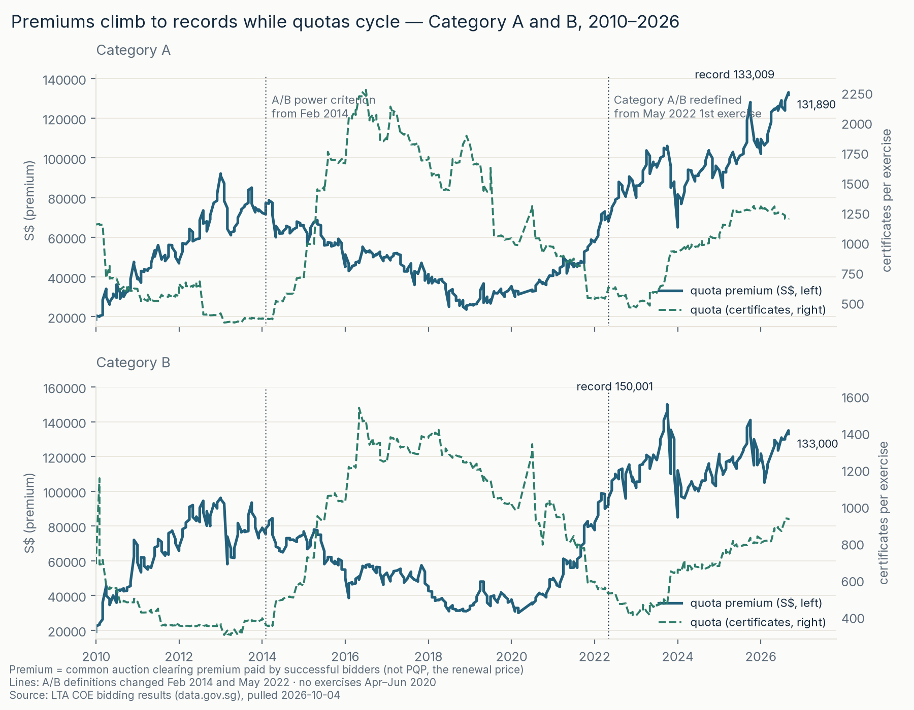
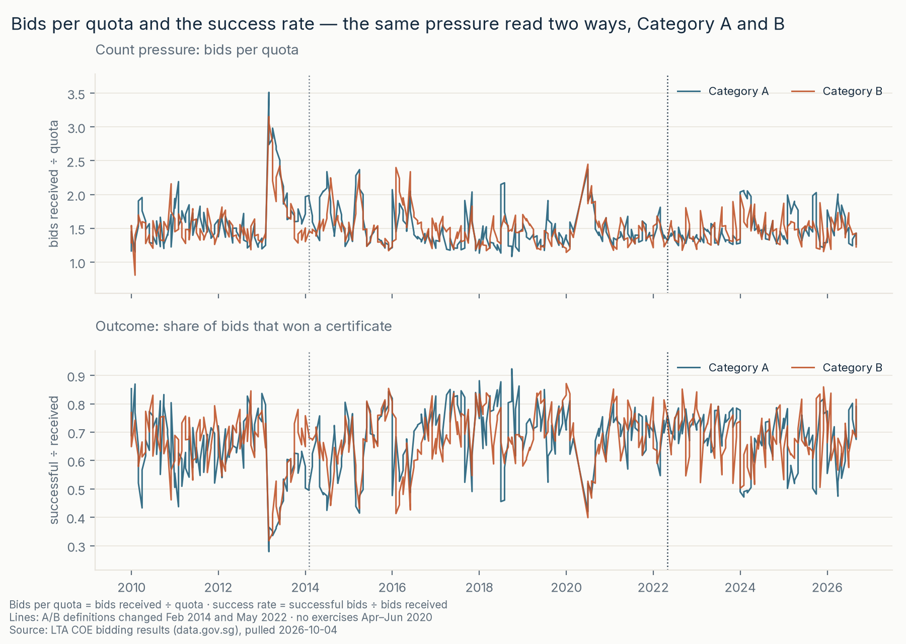

LTA COE bidding results via data.gov.sg · 396 auctions × 5 categories, 2010–2026 · 3 of 6
Since May 2022, Cat A/B premium changes have a stronger descriptive association with changes in bids per quota than with quota changes. Cat C/D show the opposite ordering. Yet Cat A’s September 2026 record occurred while quota was recovering. Bid counts cannot establish causes or reveal bidders’ reserve values.


Premium is the common final quota premium paid by every successful bidder in that category, not the lowest winning reserve price or the PQP. Bids-per-quota measures bids submitted per certificate, not unique participants; quota is announced before bidding. LTA rules and worked example.
Two selected jumps followed quota cuts above 40%: C, 2023-02 R1, +S$8,010 after −43.6%; D, 2020-08 R1, +S$1,191 after −42.1%. Co-occurrence is not causation.
Cat A included taxis before August 2012; A/B gained a power criterion in February 2014. Earlier A/B estimates therefore begin February 2014 R2, not 2010. Base sample: 1,975 changes − 5 pause − 2 May-boundary − 196 earlier-definition = 1,772.
Two CSV cells disagree with LTA’s historical table: 2010-02 R1 B quota 1,154 vs 693; 2010-01 R2 D premium S$20,090 vs S$852. Source values are unchanged; sensitivity excludes changes touching disputed cells. The apparent undersubscription is not treated as established auction behaviour.
Linux/macOS (Bash):
git clone https://github.com/faizsaifulnizam/coe-quota-premium && cd coe-quota-premium
uv venv .venv --python 3.12 # or: python -m venv .venv
source .venv/bin/activate
uv pip install -r requirements.txt # or: pip install -r requirements.txt
python src/download.py # raw CSV → data/raw/ (gitignored; add --force to re-pull)
python src/build_dataset.py # staging + 10 checks → data/processed/coe_exercises.parquet
python src/analysis.py # pressure table + jumps + attribution + sensitivity → outputs/
python src/figures.py # re-renders reports/figures/ (light + dark)
python tests/smoke_test.py
python -m unittest discover -s tests -p "test_*.py"Windows (PowerShell, no activation needed):
git clone https://github.com/faizsaifulnizam/coe-quota-premium
cd coe-quota-premium
$env:PYTHONUTF8 = "1"
uv venv .venv --python 3.12
uv pip install --python .venv\Scripts\python.exe -r requirements.txt
.venv\Scripts\python.exe src/download.py
.venv\Scripts\python.exe src/build_dataset.py
.venv\Scripts\python.exe src/analysis.py
.venv\Scripts\python.exe src/figures.py
.venv\Scripts\python.exe tests/smoke_test.py
.venv\Scripts\python.exe -m unittest discover -s tests -p "test_*.py"The latest month may contain R1 only; older incomplete months fail. January–September receipts stay fixed to those months. CSVs, figures/site copies and raw/manifest publish as separate staged batches with rollback for ordinary exceptions, not a pipeline-wide transaction or a power-loss guarantee. A refresh requires rerunning all stages and reviewing prose against outputs.
Then check outputs/coe_pressure.csv: the 2026-09 R1 Category A row reads premium 133,009 with quota 1,195 and bids per quota 1.43; R2 reads 131,890. And the first Category B row of outputs/coe_jumps.csv reads +26,990 (2024-01 R2; bids per quota 1.34 → 1.99). Data as of the 2026-10-04 pull — a later re-pull can move the newest exercise.